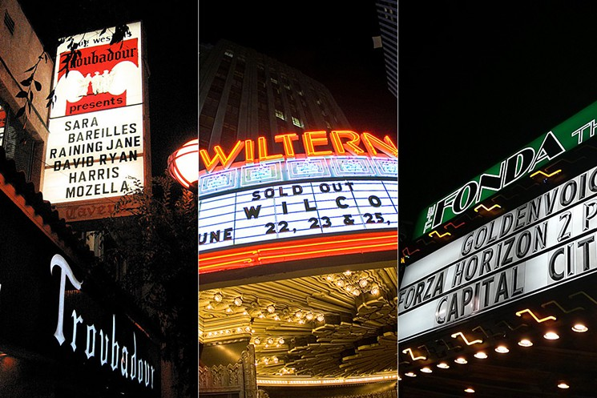
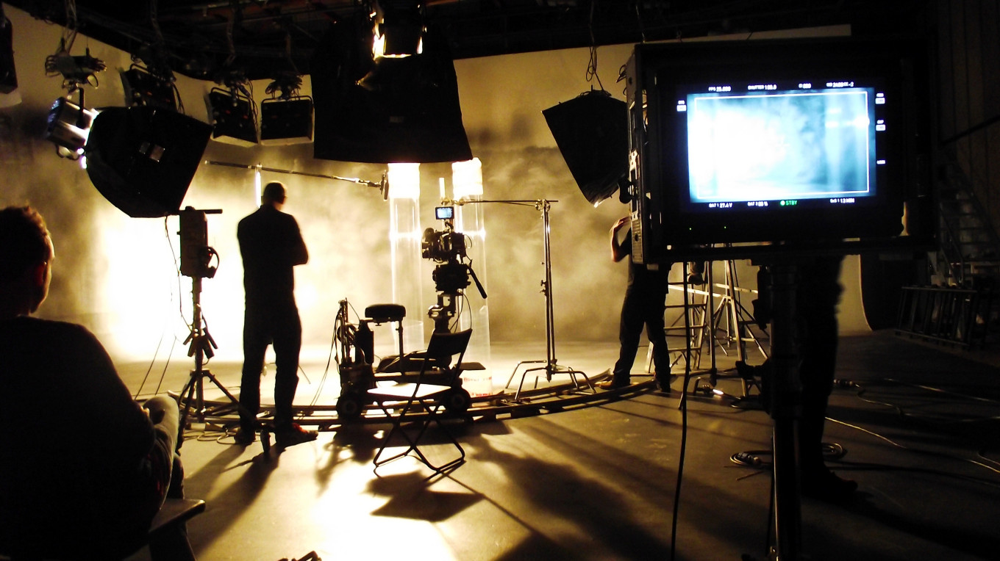
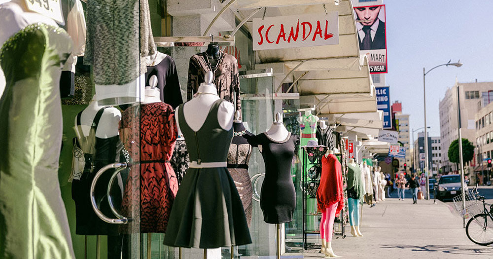

Homepage

History

Culture

Events

Tourism

Resorts

|  |
Music
There’s nothing quite like experiencing concerts in Los Angeles, whether it’s a stadium show with tens of thousands of screaming fans, or a late night jazz session in an intimate club. LA’s world class venues include the stunning Walt Disney Concert Hall and the Nokia Theatre at L.A. Live in Downtown LA, Hollywood’s Dolby Theatre, and the historic Wiltern and the Palladium. LA's year-round sunny weather is ideal for enjoying outdoor concerts at the Hollywood Bowl, Greek Theatre and John Anson Ford Theatre. Music festivals and free concerts include the Grand Performances at California Plaza, the Music Spotlight Series at Universal CityWalk, and the Twilight Dance Series at the Santa Monica Pier. Concerts happen every night in smaller clubs like the Conga Room and the House of Blues Sunset Strip. |
|
Arts
Los Angeles has over 1,600 murals throughout the city that touch on a variety of subjects. The Chandler Outdoor Gallery is a collection of murals in the NoHo Arts District. Hollywood’s urban art is more celebrity-focused, such as “Hollywood Jazz 1945-1972” on the iconic Capitol Records building, “You Are the Star” on Wilcox, and “Dolores del Rio” on Hudson. In Downtown L.A., “The Pope of Broadway” depicts actor Anthony Quinn dancing on the side of the Victor’s Clothing Building. “Los Angeles Teachers” features Edward James Olmos in character alongside Jaime Escalante in a mural located behind East L.A.’s famous El Mercado marketplace. For urban art from a different point of view, Metro's Art Department has commissioned more than 300 artists to incorporate art into transportation projects throughout L.A. County. |
|
|  |
Film and Television
Los Angeles locations have made countless appearances in films and TV episodes. Downtown L.A.’s City Hall, Union Station, Millennium Biltmore Hotel and the Bradbury Building have had starring roles for decades. Historic Hollywood locations include landmarks such as Yamashiro Restaurant and the Hollywood Roosevelt Hotel. L.A.’s natural landscape provides numerous locations, whether it’s Santa Monica beach for Baywatch or Vasquez Rocks, as seen in Star Trek. For over a century, L.A. has been the home of legendary studios, where silent movies, the latest blockbusters and hit TV shows have been shot. Must-sees for fans are tours of Universal Studios, Warner Brothers, Paramount Pictures and Sony Pictures. And a sure way to get on TV is to attend a taping of a game show or talk show at a major network studio. |
|  |
Fashion
When it comes to fashion, Los Angeles has always been a city ahead of the curve. Fashionistas should head straight to the Fashion District in Downtown L.A., one of the best shopping areas in the world for cutting edge fashion and bargain prices. Visit La Brea Avenue for trendy gear and vintage clothing, or stroll nearby West Third Street and its many boutiques. The jet set park their Ferraris on famed Rodeo Drive for the ultimate luxury items, while mere mortals can shop with the stars on Robertson Blvd. Celebrities have also made Ventura Blvd. in the Valley a hotspot for vintage and high end fashion alike. Tomorrow’s fashion superstars are being created today at the Fashion Institute of Design & Merchandising (FIDM), where the public can attend the annual DEBUT Runway Show, and fashion exhibits at the FIDM museum. |
Website made by Tony Trinh
All Text and Content is property of myself and some referenced from Wikipedia , Google and various websites.
Graphics are from Google Images and Various Websites.